⭐ Mes favoris
Stockés sur ton navigateur (localStorage) • aucun compte
Accueil
Archives
Favoris
Proposer
À propos
RSS
⭐ Tes favoris
← Retour
🧹 Vider
Les favoris restent sur ce navigateur même si tu reviens plus tard.